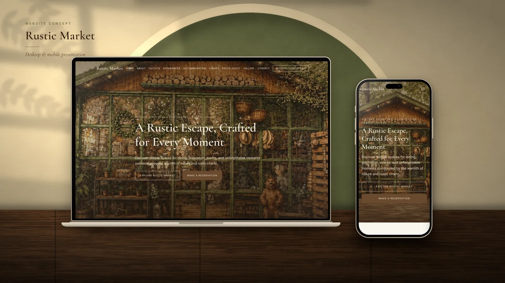
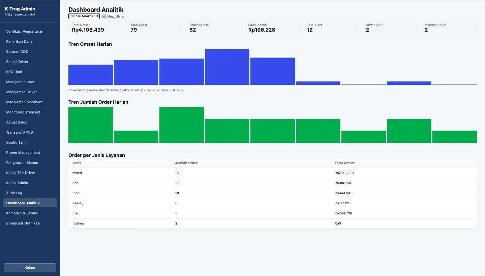

Website Project Fun English
Fun English
Fun English
Training Centre Website
Fun English
Website pusat pelatihan bahasa Inggris dengan informasi profil, program belajar, promo, dan jalur komunikasi calon siswa.
Lihat Website
Jelajahi beberapa project pilihan SynergyDev, mulai dari website bisnis dan hospitality hingga aplikasi web.
Kumpulan website bisnis dan aplikasi web. Status setiap proyek ditampilkan secara transparan.
Fun EnglishWebsite pusat pelatihan bahasa Inggris dengan informasi profil, program belajar, promo, dan jalur komunikasi calon siswa.
Lihat Website Villa Jambu Klutuk
Villa Jambu KlutukWebsite penginapan yang menyajikan informasi villa, fasilitas, galeri, lokasi, dan jalur kontak reservasi bagi calon pengunjung.
Lihat Website
Rustic MarketKonsep website multi-outlet untuk bisnis hospitality dan lifestyle, dengan pendekatan visual vintage dan informasi pengalaman pengunjung.
Lihat Demo
K-TROG AdminDashboard pengelolaan K-TROG untuk memantau ringkasan omzet, pesanan, saldo, pengguna, merchant, dan data transaksi.
Lihat Project K-TROG
K-TROGPlatform marketplace untuk menghubungkan pengguna dengan layanan lokal melalui pengalaman aplikasi berbasis web. Bagian dari K-TROG Ecosystem bersama dashboard administrator.
Lihat Project Chasly
ChaslyAplikasi pengelolaan keuangan bisnis dengan ringkasan kas, pencatatan pengeluaran, produk, pendapatan, piutang, dan stok. Masih dalam tahap pengembangan.
Preview Project